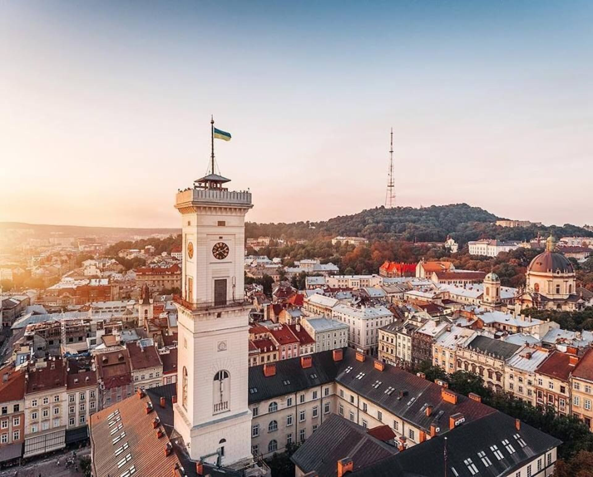

Місце народження: 28 грудня 2004 року, м. Рівне
Освіта: Обласний науковий ліцей, м. Рівне
НТУУ "КПІ", м. Київ
Хобі:
Улюблені книги/фільми
Львів — місто в Україні, адміністративний центр області, агломерації, району, міської громади, національно-культурний та освітньо-науковий осередок країни, великий промисловий центр і транспортний вузол, вважається столицею Галичини та центром Західної України. За кількістю населення — п'яте місто країни.
Це місто має багату історію, немовірно красиву архітектуру і особливу атмосферу спокою та завороження. Відвідання Львову це обов'язково відчуття духу старовинної Європи, прогулянки вузькими вуличками, і насолодження різноманітною автентичною кухнею.
